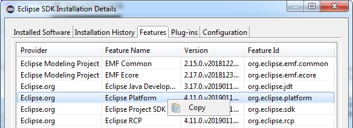
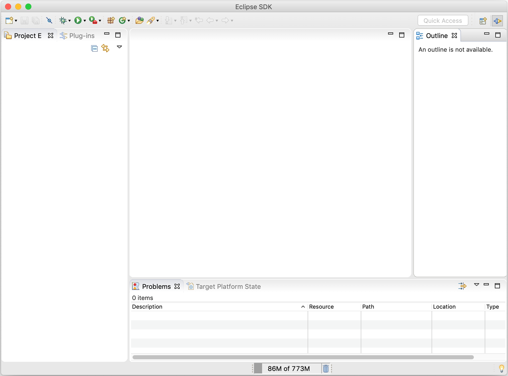
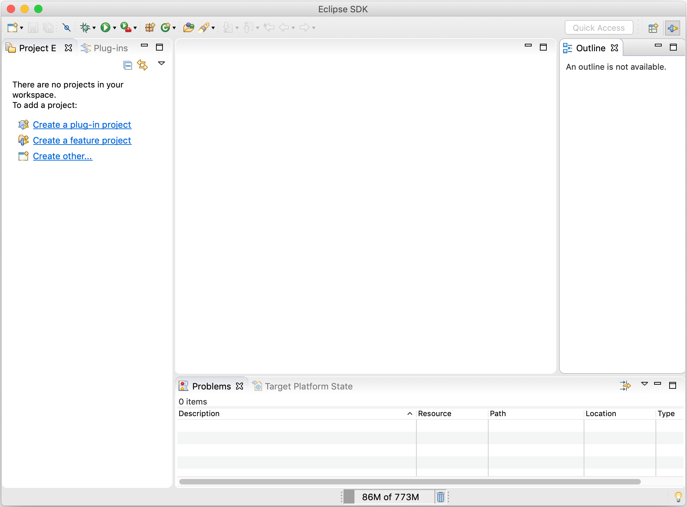
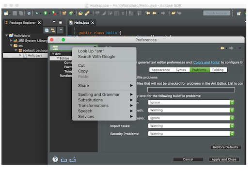
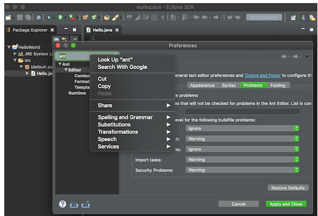
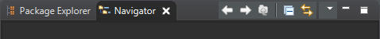

Views, Dialogs and Toolbar
|
| User defined resource filters in Project Explorer |
The Filters and Customization... menu in Project Explorer now shows an additional User Filters
tab, that you can use to exclude some resources from Project Explorer according to their name.
Full name and regular expressions are supported.

|
| Error Log view moved to Platform |
The Error Log view has been moved from the PDE project to the Platform project.
Details can be found on bug 50517.
|
| Copy to clipboard in Installation Details |
A copy to clipboard action has been added to all tabs of the Installation Details dialog.

|
| Copy & paste of Environment Variables |
The environment variables tab in the launch configuration dialogs support copy &
paste actions now. They are transferred as text data, so it is not only possible
to copy & paste between two different launch configurations, but also between
the launch configuration and e.g. some text editor or the command line.

This feature is available in all launch configurations, which use the common
environment variables tab.
|
| More Guidance for New Eclipse Users |
When the Eclipse IDE is started for the first time a mostly empty workbench window is shown.
For new Eclipse users it is hard to figure out how to proceed.

To give these users more guidance some explanatory text has been added in case of an empty workspace.
Just like the "File > New" menu this text contains links to:
- Perspective specific project creation wizards
- The generic "New Project Wizard"

|
Themes and Styling
|
| Improved Dark theme for Mac |
The Dark theme for Mac has been improved to use the colors from the macOS system dark appearance.
Some of the notable changes in Eclipse are the dark window title bar, menus, file dialogs, combos and buttons.
Note: This change is available on macOS Mojave and later.
Before:

After:

|
| Dark theme for windows improved |
The drawing operations in Windows have been improved so that custom drawn icons look better.
For example, the close icon before:
The close icon after:

|
| CSS value 'unset' |
The value unset is now supported as CSS value and is mapped to the Java value null.
When e.g. used for the background-color property, the
widget will revert to the specific native look, if it has one, or inherit the background from the parent widget.
|
General Updates
|
| Performance improvements |
Startup and interactive performance of multiple operations have been again improved in this release.
|
| Widget factories |
Factories for some SWT widgets have been created. They follow the same approach as GridLayoutFactory and GridDataFactory. Means a fluent, re-usable API.
The entry point is WidgetFactory.
To create a button for instance:
WidgetFactory.button(SWT.PUSH).text("Click me!").onSelect(event -> buttonClicked(event).create(parent);
This is work in progress and more factories will follow.
|